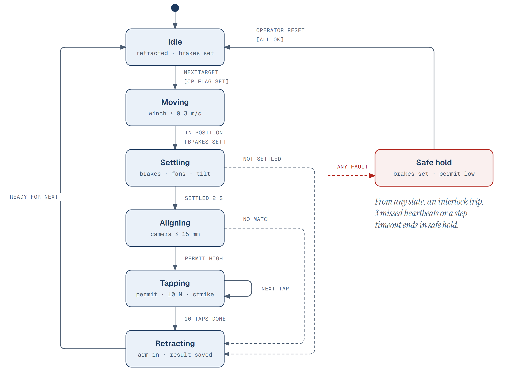

ENG4101C ROBOTICS AUTOMATION INTEGRATION · GROUP 5
Robotic façade inspection for high-rise homes
A drone survey and a wall-tapping robot, joined into one inspection system for Singapore's Periodic Façade Inspection.
Good morning. We are Group 5. Our project takes people off the side of a building. A drone surveys the façade and a robot on cables taps the wall, as one system. I am {P1}, and I will start with the problem. {P2} shows the system, {P3} the engineering, and {P4} the cost and risk. [Next slide.]
The job today: 30,000 buildings, two checks, every seven years
30,000buildings in the first cycle
Taller than 13 m and older than 20 years. Inspected every 7 years since 1 Jan 2022.
4,300inspections a year
30,000 buildings spread over the seven-year cycle (our estimate).
149 + 140people qualified
Competent Persons and Façade Inspectors when the regime started in 2021.
CHECK 1 · 100% OF THE FAÇADE
Visual inspection
Every elevation, from the ground with cameras and binoculars.
Equivalent method named in the regulations: a drone. Regulation 15(2)(a)(ii), flown by an SAC-accredited provider.
CHECK 2 · AT LEAST 10% OF EACH ELEVATION
Close-range tap test
An inspector taps the wall and listens for a hollow sound. This is the check that puts people at height.
Equivalent method named in the regulations: a robotic tapping device. Regulation 15(2)(b)(ii), with approval from the Commissioner of Building Control.
Sources: BCA media release 21 Oct 2021 [1]; BCA PFI Guidelines v1.3 s. 6.3 and 6.4 [28]; Periodic Inspection Regulations 2021 [42].
Since 2022, every building in Singapore taller than 13 metres and older than 20 years must have its façade inspected every seven years. That is about 30,000 buildings, or roughly 4,300 inspections a year. When the rule started, only 149 Competent Persons and 140 Façade Inspectors were qualified to do them. [→] Each inspection has two checks. The first is visual: every elevation, usually from the ground. [→] The second is a tap test on at least 10% of each elevation. An inspector taps the wall and listens. A hollow sound means a tile has come loose. [→ →] The regulations already name an equivalent method for each check, with the Commissioner’s approval: a drone for the visual, and a robotic tapping device for the tap test. What nobody has done is join the two into one system.
Where people hang off the wall
TODAYTwo people in a gondola, tapping by hand.
One drop, repeated across the block
Rig the gondola on the roof
Lower two people down the wall
Tap, listen, write notes and take photos
De-rig, move along the roof, start again
42person-hours suspended beside the façade, per inspection
3 days × 7 hours × 2 people on our reference block: 20 storeys, 60 m high, 30 m long, 20 m wide (our estimate).
This is the tap test today. Our reference block is 20 storeys: 60 metres high, 30 long and 20 wide. [→ for each step.] A crew rigs a gondola on the roof. Two people go down the wall in it. They tap, listen, and write down what they hear. Then the crew de-rigs, moves along the roof, and does it again for the next drop. [→] We estimate about three days of this for one block. Two people, seven hours a day: 42 person-hours hanging beside the wall, for every inspection, every seven years. And the result is a set of notes and photos with no exact position, so the same spot is hard to find again next cycle.
Six pain points, each with a number
Click a card.
The template asks for six kinds of pain point, and we could put a number on each. [Click the cards in order.] Safety: falls from height killed four workers in 2024, and one study counted more than 90 façade parts falling in three years. Quality: tapping is judged by ear, and a manual visual survey covered only 40 to 60% of the wall in one study. Time: one to five days on site, then up to ten more for the report. Manpower: about 29 buildings a year for every Competent Person. Downtime: a cordon and a rig for every drop. Cost: about S$21,700 for our reference block. That last figure is our baseline. The robot has to match it.
What we set out to do, and how we will know
Five objectives
Digitise the visual check with a drone and a façade model
Give the Competent Person one whole-building view
Automate the tap test with our SCARA arm on a cable robot
Take people off the façade for flat areas
Keep the Competent Person in control, with two approval gates
Success criteria
Image detail
1.5 mm per pixel or finer (BCA)
Visual coverage
at least 95% of the façade
Tap coverage
at least 10% per elevation, plus every flag on flat areas
People at height
0 person-hours suspended for flat areas
Traceability
100% of images and taps tied to a grid cell
Cost
no more than S$21,700 per block
Each target has an acceptance test after deployment, and each baseline its data source (proposal Table 1, test V10).
So we set five objectives. Digitise the visual check. Give the Competent Person one view of the whole building. Automate the tap test. Take people off the wall. And keep the Competent Person in control. [→ through the six criteria.] These are our targets. Images at 1.5 millimetres per pixel or finer, which is BCA's figure. At least 95% of the façade imaged. At least 10% of each elevation tapped. Zero person-hours suspended for flat areas. Every image and tap tied to a position. And a cost no higher than today. I will hand over to {P2}, who will show how the system does this. [Hand over.]
One system: seven elements on one shared grid
ENG4100CDroneFlies the route and photographs every elevation
ENG4100CFaçade model + AIStitches the images and flags defects
PERSONCP Gate 1Approves the tap targets
ENG3106CCarrier PLC + winchesLowers the platform; holds the interlocks
ENG3107CSCARA armTaps a 16-point patch with controlled force
PERSONCP Gate 2Reviews every hollow result
PFI reportFiled by the Competent Person
SHARED GRIDEvery image, flag and tap carries the same position: elevation, X and Z in 200 mm × 200 mm cells. The drone's output is the robot's input.
OPC UA + SCADAOne gateway, one database, one dashboard for both robots. It monitors and alarms. It never commands motion.
HARDWIRED TAP PERMITA 24 V line from the PLC cuts power to the hammer. No software can bypass it.
Thank you. This is the whole system in one line. [→ for each box.] A drone photographs every elevation. Software stitches the photos into a model, and AI flags possible defects. At Gate 1 the Competent Person approves where to tap. A PLC on the roof lowers the platform. Our arm taps. At Gate 2 the Competent Person reviews every hollow result before it goes into the report. [→] Three things tie these together. First, one grid. Every image, flag and tap has the same kind of address: a 200 millimetre cell on the wall. So what the drone finds, the robot can go to. [→] Second, one data layer over OPC UA. [→] Third, one hardwired safety line. The colours show which unit each part comes from. All three are in the design.
Step 1: the drone surveys every elevation
15 mstandoff, held by LiDAR range to the wall1.32 mm/pxwith a 50 mm lens. BCA asks for 1.5 or finer10.8 × 7.2 meach photo, with 70% and 60% overlap21 linesper elevation, 2.86 m apart650 imagesfor the block, about 30 min of flying
Live on this elevation
Image 0 of 193Covered 0%
Why 15 m? Closer gives more detail but less margin. 17 m is the furthest that still meets 1.5 mm per pixel. The drone stops in about 0.9 m.
Flown by an SAC-accredited provider. The drone design comes from our ENG4100C project, adapted here to 15 m and a mapping camera.
Step one is the drone. You are watching it fly one elevation. It works down the wall in 21 horizontal lines. The orange patch is one photo, 10.8 by 7.2 metres. The blue area is what has been covered, and each ring is something the AI has flagged. It flies 15 metres from the wall, where a 50 millimetre lens gives 1.32 millimetres per pixel, inside BCA's 1.5. [→] We chose 15 because 17 is the furthest that still meets the target, and the drone can stop in under a metre. The whole block is about 650 images and 30 minutes of flying. [→] An accredited provider flies it, as BCA requires. The drone is our ENG4100C design, moved in to 15 metres with a mapping camera added.
Step 2: the Competent Person chooses where to tap
The stitched façade model, with AI flags. Click the wall to add or remove a tap strip. Each strip is 0.8 m wide and runs the full height.
0.0%of this elevation tapped. BCA minimum is 10%0 of 6flags inside a strip0drops on this face, 30 min of rigging each
The robot stays idle until the list is approved.
Full Gate 1 screen: proposal Figure 10.
Step two is a person. The photos are stitched into this one view of the elevation, and the amber marks are what the AI flagged. The Competent Person now decides where the robot will tap. The rule is at least 10% of each elevation, and every flag on a flat area. [Click "Place strips through the flags".] Each strip is 0.8 metres wide, one arm patch, from roof to ground. Four strips on this face gives just over 10%. Notice one flag sits on its own. A strip for that one flag costs 30 minutes of rigging, so the Competent Person can send it to a manual check. That is a judgement, and it belongs to a person. [Click "Approve targets".] Approval is a method call over OPC UA. Without it, the PLC will not move the winch.
Step 3: the robot goes down the wall
We reuse a proven platform
A cable-driven robot from Hong Kong, verified in 5 site trials and used on more than 12 commercial jobs. Cables carry the weight, so it does not rely on suction over cracked tiles.
20 kgplatform and arm, on two cables (98 N each)0.3 m/sfastest winch speed, set by the PLC2 brakesspring-applied, so they hold on power loss104 Nfrom two fans pressing it onto the wall
Height 57 mStep waitingBrakes releasedOn the wall no
shown 10× faster than real
Step three. On the roof is a carrier with two winches and a safety PLC. We did not design this platform. It comes from a Hong Kong system that has been through five site trials and more than twelve commercial jobs. We chose cables because they carry the weight. A suction robot depends on grip, and grip fails on cracked tiles, which is exactly where the defects are. [Click "Lower to the first target", or press →.] The PLC lowers the platform at no more than 0.3 metres a second. This is sped up ten times. At the target height the spring brakes set. Then two fans press the platform onto the wall with about 104 newtons, and four bumpers confirm contact. Only then may the arm move.
Three units in one tap
ENG4100CPlaces the platform
Winch encoders give the height. The arm camera matches the tiles to the drone map and measures the last 30 to 50 mm of error.
ENG3107CAims the hammer
Inverse kinematics turns each grid point into joint angles. Joint 3 presses to a 10 N preload.
ENG3106CDecides if the strike may happen
The PLC grants the tap permit only while tension, brakes, fan thrust and wind are inside limits.
Tap permit lowTaps 0 / 16θ1 0° θ2 0°Preload 0 N
Take one away and no tap happens: wrong place, no reach, or no permit.
Now watch one patch being tapped, and watch the three cards. [Let it run.] The steps along the bottom are the handshake from our report. First, ENG4100C, autonomous robots: the platform is placed from the winch encoders, and the arm camera matches the tiles it sees to the drone's map. Cable stretch and wind leave 30 to 50 millimetres of error, and the camera removes it. Second, ENG3107C, robotics modelling: inverse kinematics turns each grid point into two joint angles, and the third joint presses the hammer until it reads 10 newtons. Third, ENG3106C, industrial automation: the arm asks the PLC for permission. The lamp goes green only while cable tension, brakes, fan thrust and wind are all inside limits. Then the hammer fires. Green is solid, red is hollow. [→] Take any one unit away and there is no tap. That is what we mean by integrated.
Who talks to whom, how fast, and what happens when it fails
Link
How
Rate
If it fails
Drone ↔ ground station
Encrypted radio
10 Hz
Lost for 3 s: hover, then the pre-set lost-link action
Ground station ↔ PLC
OPC UA, signed and encrypted
500 ms, heartbeat 1 s
3 missed heartbeats: brakes on, arm retracted
PLC ↔ arm
Hardwired 24 V permit + Modbus TCP
10 ms scan
Permit low: arm retracts within 200 ms
Sensors → PLC
4–20 mA, safety inputs
10 ms scan
Below 3.6 mA is treated as a fault: hold
Gateway → SCADA
OPC UA over TLS
500 ms
Site keeps running; data is buffered
All 16 interfaces, and the 8 tap-path messages with data type, timeout and acknowledgement: proposal Tables 16 and 17.
Safety trips are local
They run in the PLC in under 100 ms and never wait for the network.
The dashboard never drives
SCADA shows and alarms. Motion commands go to the PLC, which obeys only while every interlock is healthy.
An integration is only as good as its interfaces. Here are five of the sixteen in our report. [→ for each row.] For each one we state how it talks, how fast, and what happens when it fails. Lose the drone link for three seconds and the drone hovers. Miss three heartbeats and the robot holds. The PLC to the arm is the important one. It is a wire, not a message. If that line goes low, the hammer has no power and the arm retracts within 200 milliseconds. [→ →] Two rules sit behind this. Safety trips happen in the PLC and never wait for a network. And the dashboard never drives anything. Over to {P3}. [Hand over.]
The arm: why a SCARA, and where it can reach
Two joints turn in the plane of the wall; the third slides straight into it. A SCARA is stiff along that third axis, so the strike goes straight into the wall.
0.70 mfurthest reach, arm straight (L1 = L2 = 0.35 m)0.122 mclosest reach, at the 160° fold limit19 mmspare at the inner points, so the camera must align within 15 mm
Sizing: joint 1 holds 17.2 N·m with the arm level, so we select at least 35 N·m.
Thank you. The part we designed ourselves is the arm. It is a SCARA. Two joints turn in the plane of the wall and move the hammer across a patch. The third slides straight into the wall. We chose it because a SCARA is stiff along that third axis, so the strike goes straight in. [Click the point at top right, 0.30, 0.30.] This is the worked example from our report. For the point 0.30, 0.30 the inverse kinematics gives an elbow angle of 105.4 degrees and a shoulder angle of minus 7.7. [Click an inner point.] The inner points are the tight ones. [→] The arm cannot fold past 160 degrees, so it cannot reach closer than 122 millimetres. The inner tap points sit only 19 millimetres outside that. That is why the camera must align the platform to within 15 millimetres before any tap. [→] For the motors, the shoulder holds 17.2 newton metres with the arm level, so we select 35.
Hollow or solid: every tap starts the same way
10 Npreload before every strike, held by a 1 kHz force loop0.2 Jstrike: a 0.1 kg hammer head at 2 m/s48 kHzmicrophone, 200 ms of sound per tap1.5 sper tap: move, preload, strike, retract
TAP ONE TILE
The force trace must sit in the green band before the hammer fires.
The classifier screens; the Competent Person decides. Every hollow result is reviewed, plus a random 5% of solid ones. Bench target: catch at least 95% of hollow tiles.
A human tapper hits a little differently every time, and tires over hundreds of taps. The robot does not. Before every strike, the third joint presses until the load cell reads 10 newtons. Then a solenoid fires a 0.1 kilogram hammer head at 2 metres a second, which is 0.2 joules. Every tap starts from the same contact. [Click "Solid".] Top trace: the force rises into the green band, then the strike. Bottom trace: the sound. A solid tile gives a short, bright ring. [Click "Hollow".] A hollow one rings lower and for longer. The traces are illustrative; the classifier must still be proven on test panels. [Click "Visibly cracked".] If the camera sees a cracked tile, the arm does not strike it at all. It flags it for the Competent Person. [→] And the classifier only screens. A person reviews every hollow result and a random 5% of solid ones.
When something goes wrong, every fault ends the same way
SAFE STATEBrakes set · permit low · arm retracted
INJECT A FAULT, THEN CLEAR IT
Tap permit lowBrakes –Joint 3 0 mmWind –
Running normally.
After a 2026 autonomous shuttle incident in Punggol, we show the operator the exact trigger and value for every automatic stop.
The robot is tapping. Let us break things. [Click "Squall gust".] Wind goes above our 8 metres a second limit. The permit drops, the arm pulls back, the brakes hold, and the banner says exactly why. [Click it again to clear.] It carries on from where it stopped. [Click "Fan failure", then clear.] One fan lost leaves 55 newtons. We need 69 to hold the platform against the tap and the wind, so the permit goes low. [Click "Emergency stop", then clear.] Every fault ends in the same state: brakes set, permit low, arm retracted. One safe state is easier to prove than five. [→] And every stop shows its reason, a lesson from the Punggol shuttle incident.
The logic behind the safe state

Proposal Figures 8, 9 and 10. Screen values are illustrative.
Behind that one safe state is plain PLC logic. [Ladder logic is showing.] Rung one: the winch may move only with the arm retracted, tension and wind in limits, a released target and no hold. Rung two is the tap permit: both brakes set, fans, tilt and heartbeat healthy, and the winch stopped. Any trip latches a hold that only an operator can reset. [→ Tap cycle states.] Here is the same cycle as states: six of them, and one way out of every fault. [→ Operator screen.] And this is what the operator sees: every permissive as a lamp, and every alarm with its trigger value.
Three sizing checks that changed the design
POWER DOWN 65 m OF CABLE
The umbilical
Fans and arm need 1.2 kW at the platform.
24 V DC
50 A, loses 45 V. Impossible
48 V DC
can deliver 1.0 kW at most. Not enough
230 V AC
5.3 A, loses 4.7 V (2%). Chosen
HOLDING THE WALL
The fans
Tap reaction
30 N
Preload
10 N
Wind at 10 m/s on 0.4 m²
29 N
× 1.5 margin
104 N, two fans of 55 N
HOW LONG IT TAKES
Tapping time
10% of 6,000 m²
938 patches
× 54 s each
14.1 h
13 drops × 30 min
6.5 h
Total
20.6 h ≈ 3 site days
HONEST RESULTThe robot is not faster than today. It is safer, consistent and recorded.
Three calculations changed our design. [→ ×3] One, power. The platform needs 1.2 kilowatts at the end of 65 metres of cable. At 24 volts the cable loses 45 volts, which is impossible. At 48 volts it cannot deliver more than one kilowatt. So we send 230 volts AC and convert on the platform: 5 amps and a 2% drop. [→ ×4] Two, the fans. They must resist the tap, the preload and a 10 metre a second wind: 69 newtons. With a margin of one and a half, 104. [→ ×4] Three, time. Ten percent of the block is 938 patches. At 54 seconds each, plus 13 moves along the roof, that is about three site days. [→] So the robot is not faster than a gondola crew. The gain is that nobody hangs off the wall, and every tap is recorded.
What else we considered, scored against the requirements
Suction grip fails on cracked tiles; a drone cannot hold steady while striking
Tapping arm
3-joint SCARA 4.00
Gantry 3.60 · 6-axis arm 3.45
Stiff along the tap; light enough for a 20 kg platform
Robot positioning
Winch encoders + arm camera 4.45
RTK on the platform 3.05 · total station 3.05
The wall blocks about a quarter of the sky
Tap sensing
Force-controlled solenoid + microphone 4.15
Ultrasonic probe 3.10 · thermal alone fails the tactile gate
Same contact for every tap
The drone
Hire an accredited provider
Buy: about S$52,000 of hardware
S$2,750 a day, accreditation and pilots included
WEIGHTSSafety 30% · cost 20% · cycle time 15% · reach 15% · payload 10% · maintainability 10%. Moving 10 points between safety and cost changes no choice.
Scores 1 to 5 are the group's engineering judgement, after three pass/fail gates. Proposal Table 10.
We scored the alternatives, not just listed them. [→ for each row.] Each option first has to pass three gates, such as a tap permit that does not depend on the network. Then safety carries the most weight. The cable robot scores 3.95. Manual access stays for ledges. A tapping drone cannot hold steady while it strikes, and a suction robot's grip fails on cracked tiles. A SCARA beats a gantry or a six-axis arm: stiff along the tap, and light. The robot positions itself from its winches and camera, because the wall blocks a quarter of the sky. And we hire the drone rather than buy it. [→] Shifting weight between safety and cost changes none of these. {P4} will show what it costs. [Hand over.]
Does it pay? Move the two things we do not yet know
S$132,400fixed cost a year: depreciation over 7 years, maintenance, insurance, softwareS$15,000per job: crew, drone service, CP and inspector fees20 a yearbreak-even volume4.3 yearssimple payback
Manual today
S$21,700
Robot route
S$20,300
Our rule for buying
Below 20 blocks a year, hire the robot as a service, up to S$3,650 per site day. Above 20 to 24 blocks a year, buy it, at any price up to S$350,000.
At 25 blocks a year, that is also 1,050 person-hours a year no longer spent hanging off a wall.
Manual baseline from vendor guide prices, not quotations [29][30]. Model: proposal 3.6, Tables 20 and 21.
Thank you. Does it pay? Two things we do not know yet: what the platform costs, because the supplier does not publish a price, and how many jobs a year we would win. So we made both a slider. Our planning case is a S$250,000 platform and 25 blocks a year. Each job costs S$15,000 to run. Fixed costs are about S$132,000 a year. That gives S$20,300 a block, against S$21,700 today. [Drag inspections down to 15.] At 15 jobs a year the robot costs more than a gondola crew. [Drag back up past 20.] Break-even is 20 a year. [Drag the price to 350, then back to 250.] Even at S$350,000 it breaks even at 24. [→] That gives a simple rule. At low volume, hire the robot by the day, up to S$3,650. Once a Town Council contract takes us past 20 blocks a year, buy it. [→] The saving is small. The real return is a thousand hours a year that nobody spends hanging off a wall.
Fifteen hazards, before and after our controls
1High (15 to 25)12Medium (8 to 14)2Low (1 to 7)
H2, squall gusts, is the one High risk. Gusts in Singapore reach 11 to 22 m/s, above the drone's 12 m/s rating.
Five stay Medium on purpose. A fall or a missed defect is still severe, so we did not lower severity. We lowered likelihood, with hardware barriers and a person checking.
Each control is tied to a test and a named owner. If the test fails, the limit is cut: for example the wind limit drops from 8 to 6 m/s.
We found fifteen hazards: ten from the drone and five from the robot. Likelihood runs up the side and severity along the bottom. Before controls there is one High risk: H2, squall gusts. Singapore gusts reach 11 to 22 metres a second, and the drone is rated for 12. [Click "After controls".] After controls, nothing is High. Our wind limit is 8 metres a second with live monitoring, so H2 falls to Low. [→] Five stay Medium, and that is deliberate. Look at how they moved: down, not left. A loose tile falling or a missed defect is just as serious after our controls as before. So we did not pretend severity went down. We cut the likelihood, with hardware barriers and a person checking. [→] Every control is tied to a test and an owner. If a test fails, we cut the operating limit. We do not move the target.
What we still have to prove, and what we are sure of
STAGE 1 · ABOUT 3 MONTHS
Bench and dataset
Strike force, tap classifier, image AI, certificates, and quotes for the manual baseline.
STAGE 2 · ABOUT 2 MONTHS
Test block
Wind limits, positioning near the wall, rigging time, cycle time. Then apply for approval.
STAGE 3 · ABOUT 1 MONTH
Pilot block
First live inspection, with both Competent Person gates.
Limits we state plainly
Flat areas only; corners and ledges stay manual. Robotic tapping needs approval for each use. Costs are guide prices until the baseline test brings quotes. The tap classifier is unproven until Stage 1.
One grid
The drone's map is the robot's target list.
One wire
A hardwired permit that software cannot bypass.
Two gates
A person approves the targets and the results.
Zero suspended
Nobody hangs off the wall for flat areas.
This is a proposal, so let me be clear about what is not yet proven. [→ ×3] We have ten validation tests in three stages: the bench, a test block, then one pilot block under approval. Each stage has an exit gate. [→] And the limits. The robot works on flat areas only. Our costs are guide prices. And the tap classifier is unproven until it is tested. [→ ×4] But four things we are sure of, because they are design decisions. One grid, so the drone's map becomes the robot's target list. One wire, so no software can fire the hammer. Two gates, so a person approves what is tapped and what is reported. And zero people suspended beside the wall for flat areas. Thank you. We welcome your questions.
Questions
Press D for the full dashboard: three views, the tap handshake, PLC signals and fault injection. Press 1 to 4 to jump back to a part.
Numbers are from our proposal, version 11. Vendor prices and published study figures are indicative. Oscilloscope traces in the twin are illustrative.
Backup for questions. Press D to open the full dashboard. Useful answers: the reference block is 60 m × 30 m × 20 m, 6,000 m² of façade. Drone: 15 m standoff, 1.32 mm per pixel, about 650 images. Arm: L1 = L2 = 0.35 m, 16 taps per 0.8 m patch, 10 N preload, 0.2 J strike. Platform: 20 kg, two cables, 104 N of fan thrust, 230 V AC umbilical. Time: about 3 site days. Cost: S$20,300 against S$21,700 at 25 jobs a year and a S$250,000 platform. Risk: 1 High before, none after, 5 Medium kept as low as reasonably practicable.
drag to orbit · scroll to zoom
—1 / 20Elapsed 00:00 / 20:00on plan
00:00
Running the presentation
→ Space
Next step or slide. Slides with reveals step through them first.
←
Back
T
Start or pause the 20-minute timer. It starts on its own when you leave the title slide.
N
Show the script under the slide (for rehearsal).
P
Presenter view in a second window: big script, timer, next slide. Put it on the laptop screen and the deck on the projector.
D
Open the full dashboard over any slide. Esc to close.
F
Full screen
1 2 3 4
Jump to the start of that presenter's part
Keep this file in the same folder as index.html, js and vendor. Printable script: script.html.